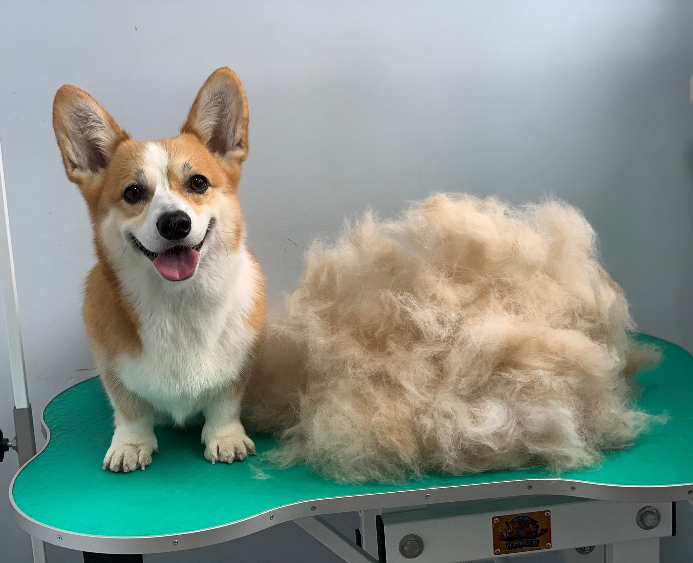
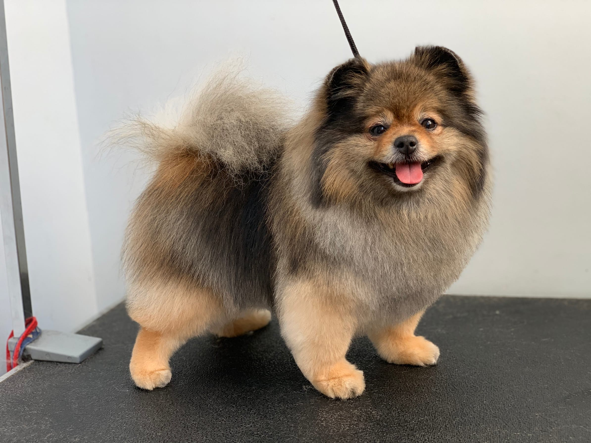
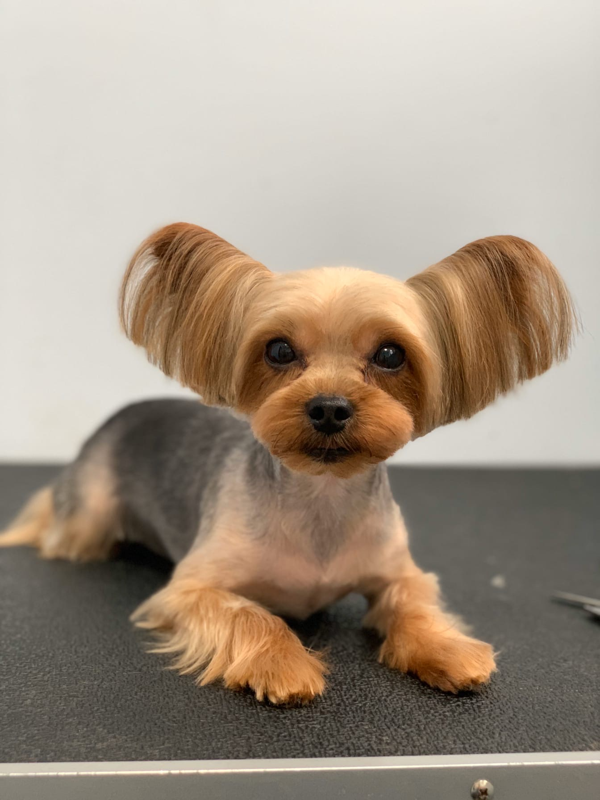
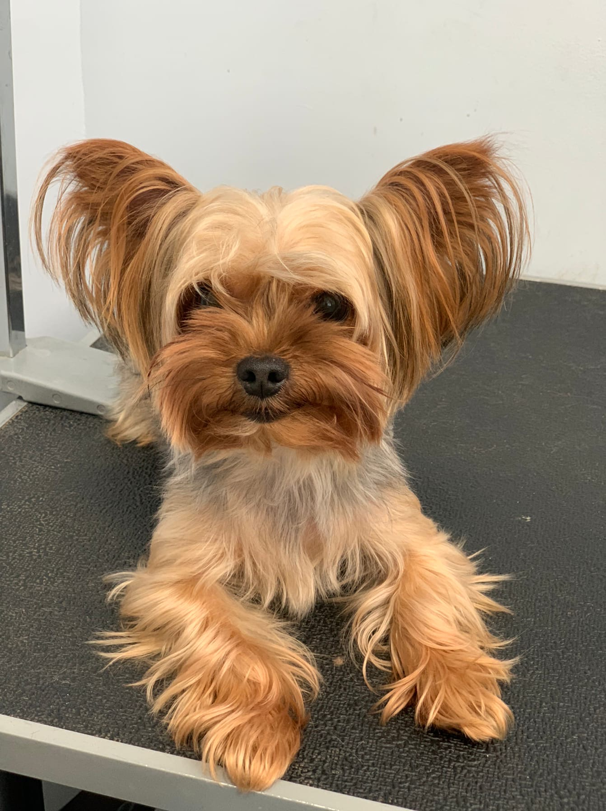

⇦На главную
Стрижка,вычес и тримминг собак
- Модельная стрижка:это стрижка/тримминг согласно стандарта породы.
- Пет-стрижка-это стрижка, которые отходят от стандарта породы и выполняются с учетом Ваших пожеланий.
- Гигиеническая - это стрижка, необходимая для гигиены животного. Она включает в себя мытье, стрижку мордочки и интимной зоны, когтей, обработку ушей, глаз, лап.


до/после

